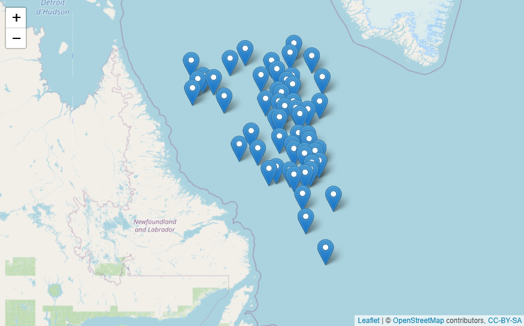

The goal of argodata is to provide a data frame-based interface to data generated by the Argo floats program.
Installation
You can install the development version from GitHub with:
# install.packages("remotes")
remotes::install_github("ArgoCanada/argodata")The argodata package downloads files from the FTP and HTTPS mirrors, caches them, and loads them into R. You can set the mirror using argo_set_mirror() and the cache directory using argo_set_cache_dir():
argo_set_mirror("https://data-argo.ifremer.fr/")
argo_set_cache_dir("my/argo/cache")Optionally, you can set options(argodata.cache_dir = "my/argo/cache") in your .Rprofile to persist this value between R sessions (see usethis::edit_r_profile()).
Example
library(tidyverse)
library(argodata)
# search for profiles that match some criteria
(prof_ns_may_2020 <- argo_global_prof() %>%
filter(
latitude >= 50, latitude <= 60,
longitude >= -60, longitude <= -50,
lubridate::year(date) == 2020,
lubridate::month(date) == 5
))
#> # A tibble: 55 x 8
#> file date latitude longitude ocean profiler_type institution
#> <chr> <dttm> <dbl> <dbl> <chr> <dbl> <chr>
#> 1 bodc~ 2020-05-05 16:48:52 56.9 -55.6 A 846 BO
#> 2 bodc~ 2020-05-15 14:51:15 56.3 -55.2 A 846 BO
#> 3 bodc~ 2020-05-25 16:41:59 55.6 -54.0 A 846 BO
#> 4 bodc~ 2020-05-02 16:13:53 59.5 -51.6 A 846 BO
#> 5 bodc~ 2020-05-12 17:51:58 59.7 -53.0 A 846 BO
#> 6 bodc~ 2020-05-22 16:12:39 59.1 -53.9 A 846 BO
#> 7 bodc~ 2020-05-04 01:44:23 59.4 -59.6 A 846 BO
#> 8 bodc~ 2020-05-13 21:17:51 58.8 -58.1 A 846 BO
#> 9 bodc~ 2020-05-23 16:30:46 58.2 -57.5 A 846 BO
#> 10 cori~ 2020-05-04 07:14:14 58.0 -52.8 A 846 IF
#> # ... with 45 more rows, and 1 more variable: date_update <dttm>
# downloads, caches, and reads the NetCDF files
(levels_ns_may_2020 <- prof_ns_may_2020 %>%
argo_prof_levels() )
#> # A tibble: 15,596 x 18
#> float cycle_number date pres psal temp pres_qc psal_qc
#> <chr> <int> <dttm> <dbl> <dbl> <dbl> <chr> <chr>
#> 1 bodc~ 213 2020-05-05 16:48:51 4.20 34.8 3.45 1 1
#> 2 bodc~ 213 2020-05-05 16:48:51 9.80 34.8 3.45 1 1
#> 3 bodc~ 213 2020-05-05 16:48:51 15.3 34.8 3.45 1 1
#> 4 bodc~ 213 2020-05-05 16:48:51 20 34.8 3.45 1 1
#> 5 bodc~ 213 2020-05-05 16:48:51 25 34.8 3.44 1 1
#> 6 bodc~ 213 2020-05-05 16:48:51 29.8 34.8 3.44 1 1
#> 7 bodc~ 213 2020-05-05 16:48:51 34.7 34.8 3.45 1 1
#> 8 bodc~ 213 2020-05-05 16:48:51 40.2 34.8 3.44 1 1
#> 9 bodc~ 213 2020-05-05 16:48:51 50.1 34.8 3.43 1 1
#> 10 bodc~ 213 2020-05-05 16:48:51 59.4 34.8 3.43 1 1
#> # ... with 15,586 more rows, and 10 more variables: temp_qc <chr>,
#> # pres_adjusted <dbl>, psal_adjusted <dbl>, temp_adjusted <dbl>,
#> # pres_adjusted_qc <chr>, psal_adjusted_qc <chr>, temp_adjusted_qc <chr>,
#> # pres_adjusted_error <dbl>, psal_adjusted_error <dbl>,
#> # temp_adjusted_error <dbl>
# plot!
levels_ns_may_2020 %>%
filter(psal_qc == 1) %>%
ggplot(aes(x = psal, y = pres, col = temp)) +
geom_point() +
scale_y_reverse() +
theme_bw()
In RStudio, you can use the leaflet package to view locations of profiles interactively.
library(leaflet)
prof_ns_may_2020 %>%
leaflet() %>%
addTiles() %>%
addMarkers(lng = ~longitude, lat = ~latitude, label = ~file)